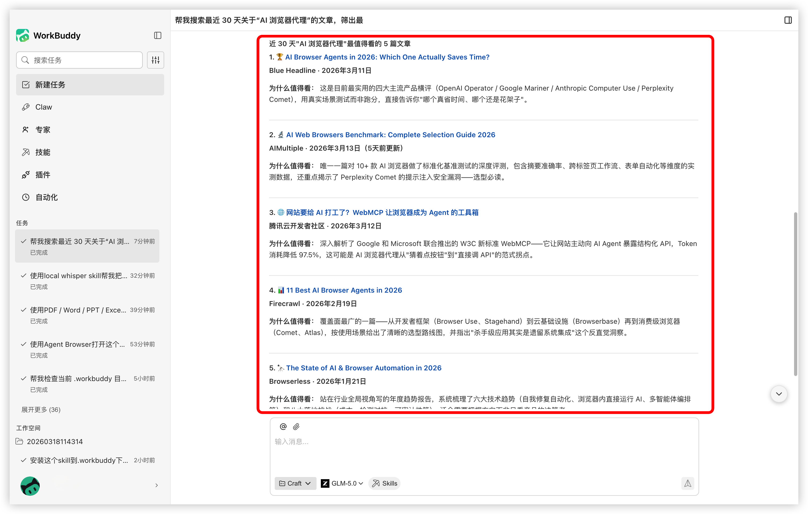

Web Search
一、基本信息
- 安装名：
web-search - 仓库来源：
SkillHub
二、功能简介
当问题涉及 最近、最新、现在 等时效性信息时，仅依赖模型记忆往往不够。Web Search 可以让 WorkBuddy 先搜索、再整理、再回答，降低因信息过期导致的误判。
三、适用场景
- 查询某个主题的最新资料
- 查找最近的新闻和文章
- 快速收集某一领域的信息
- 先搜索一轮，再让
AI做归纳整理
四、推荐使用方式
直接说明检索主题、时间范围和你最终需要的输出格式。
示例指令：
请帮我搜索最近
1个月AI办公工具领域的重要动态，整理成要点摘要，并附上来源链接。
五、效果示意
下面是 WorkBuddy 实际执行搜索后的界面示意：

六、使用建议
- 带时间范围提问：例如 最近
1周、最近1个月、今年以来。 - 要求附带来源：便于后续复核与引用。
- 适合先查后写：特别适合资讯汇总、竞品调研和资料整理。